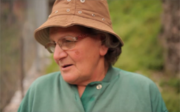
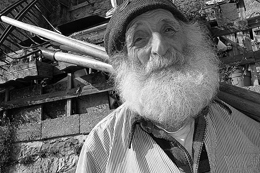
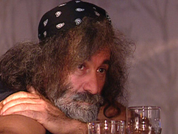

Luciano Pizzin
Luciano, the Mayor of Erto, has spent most of his life with a dream in his heart: rescuing his village. He was 4 years old on the time of the disaster but his family survived. He believes that the 50th anniversary of the Vajont tragedy will represent a turning point. He has ambitious plans but not everyone agrees with him.
Giovanna Corona
She lost 13 relatives in the Vajont disaster. She represents the villagers who consider the arrival of "strangers" to Erto as an exploitation of their grievances. Hardened by the events that changed her life and the life of the village forever, she carries on caring for her goats
Cristiano Corona
Cristiano is an 11 years old boy. He spends a lot of time with his grandmother Giovanna and her goats. He enjoys playing the accordion, climbing trees and discovering the forest. Sometimes his accordion tunes can be heard in the alleys of Erto, becoming the soundtrack of the village. His voice and thoughts punctuate the events of the film, letting emerge the past and the future of Erto with a fairytale tone.
Peppino Filippin
82 years old, Peppino, a bizarre and out-of the ordinary character, lives on his own in a big house on the mountain facing Erto, from where he overlooks the village. Peppino had worked in the building site of the dam, a subject he often talks about in his hallucinatory soliloquies. He lives in his solitary world, disconnected from reality, with the only company of a few cows and a television.
Mauro Corona
Among the citizens of Erto, there is a famous one: Mauro Corona. He is an acclaimed writer and carver, whose success attracts tourists from all over Italy. He has his own workshop in the new part of Erto, where tourists try to catch a glimpse of the famous 'Maestro'. With a bandana on his head, he’s eccentric, hot-tempered character, both loved and hated by his fellow citizens.